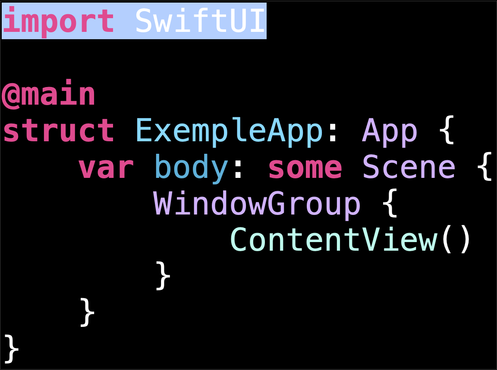
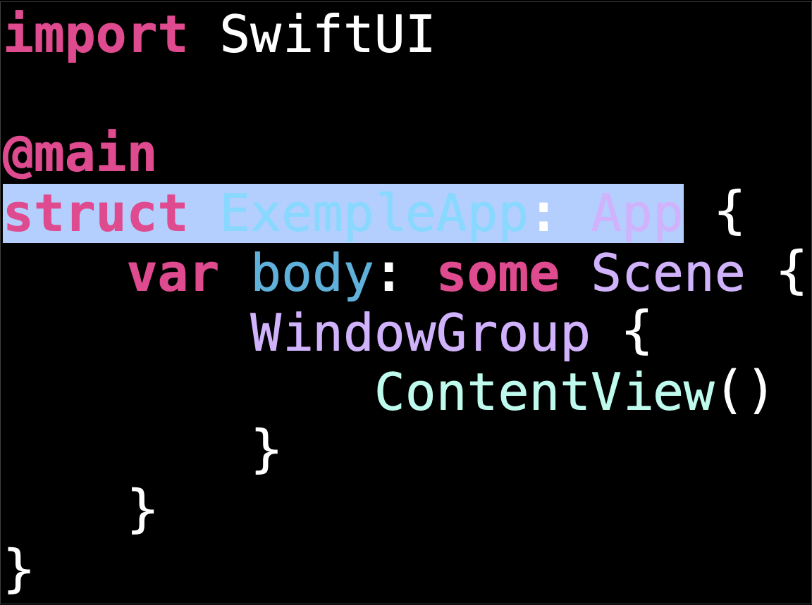

SwiftUI est un framework moderne développé par Apple pour créer des interfaces utilisateur de manière déclarative sur ses plateformes, notamment iOS, macOS, watchOS et tvOS. Intégré à Xcode, SwiftUI simplifie le processus de développement en utilisant le langage Swift et en offrant une approche intuitive basée sur des déclarations visuelles. Ce framework permet aux développeurs de concevoir des interfaces réactives et adaptatives tout en réduisant le code nécessaire et en facilitant l’intégration des mises à jour et des animations.
Une application SwiftUI est principalement composée des éléments suivants :
Référence : Neil Smyth. iOS 18 App Development Essentials. Payload Media, Inc.
Dans cette section, nous allons explorer la structure d’une application SwiftUI en utilisant un exemple simple d’un projet nommé Exemple. Consultez le module 1 pour savoir comment créer un projet dans Xcode.
La structure commence par une déclaration de la structure nommée ExempleApp (nom du projet suivi de "App"), qui agit comme la porte d’entrée de notre application "Exemple". Penchons-nous sur le contenu de ce fichier et décortiquons ce code :
Pour accéder aux symboles et aux fonctionnalités de SwiftUI, l'application utilise une déclaration d'importation afin d'importer le framework SwiftUI.
Pour indiquer le point d'entrée de l'application SwiftUI, l'exemple applique l'attribut @main à la structure de l'application.
⚠️ ImpotantUne application SwiftUI ne peut contenir qu'un seul point d'entrée. Toute tentative d'application de l'attribut @main à plus d'une structure dans l'application entraîne une erreur de compilation.
La structure ExempleApp est conforme au protocole App et fournit le contenu ainsi que le comportement de l'application.
La structure implémente la propriété calculée body, qui est une exigence du protocole App.
Cette propriété renvoie le contenu de votre application, décrit comme Scene. Une scène contient la hiérarchie des vues qui définit l'interface utilisateur de l'application. SwiftUI fournit différents types de scènes, notamment WindowGroup,Window, DocumentGroup et Settings.
Cet exemple utilise une WindowGroup pour représenter la fenêtre principale affichée par l'application.
SwiftUI offre des comportements spécifiques à chaque plateforme pour le composant WindowGroup. Sur macOS et iPadOS, il est par exemple possible d’ouvrir plusieurs fenêtres au sein d’un même groupe. Sur macOS, il est également possible de combiner plusieurs instances de WindowGroup en un ensemble d’onglets.
La scène contient une vue personnalisée appelée ContentView, qui crée une hiérarchie de view.
Dans SwiftUI, une scène contient la hiérarchie des vues d'une application qui seront affichées en tant qu'interface utilisateur. Une hiérarchie de vues définit la disposition de ces dernières par rapport aux autres vues. Dans cet exemple, une scène WindowGroup contient la hiérarchie de vues composée par ContentView à l'aide d'autres vues.
Le code source commence par importer le framework SwiftUI.
ContentView est une structure conforme au protocole View.
Une vue définit un ou plusieurs éléments visuels qui apparaissent sur un écran. Une vue est généralement composée d'autres vues, formant ainsi une hiérarchie.
ContentView met en œuvre la propriété body comme le fait la structure ExempleApp dans la section précédente.
RemarqueL’implémentation de la propriété body est un modèle courant que l’on retrouve dans tout le code SwiftUI. Par exemple, lorsqu’une structure adopte des protocoles comme App, Scene et View.
ContentView contient la vue VStack fournie par SwiftUI, qui organise les sous-vues verticalement.
Une VStack affiche simultanément toutes les vues qu'elle contient, qu'elles soient à l'écran ou hors écran. L'utilisation de VStack est idéale lorsque vous avez un petit nombre de vues secondaires. Toutefois, si votre application doit afficher beaucoup plus de vues secondaires, envisagez d'utiliser LazyVStack, qui ne les rend que lorsque l'application doit les afficher à l'écran.
La première sous-vue de VStack est Image, une vue qui affiche une image.
Cet exemple affiche l'image d'un globe à l'aide de la méthode d'initialisation init(systemName :). Cette méthode crée une vue d'image qui affiche le symbole du système. Les images de symboles, comme le globe, proviennent de SF Symbols, une bibliothèque d'icônes que vous pouvez utiliser dans votre application.
ContentView applique le modificateur de vue imageScale(_:) à la vue de l'image afin de mettre cette dernière à l'échelle dans la vue, à la taille relative Image.Scale.large.
Le modificateur foregroundColor(_:) ajoute de la couleur à l'image.
Dans cet exemple, ContentView applique la couleur sémantique accentColor, qui reflète la couleur d'accentuation du système ou de l'application. Pour en savoir plus sur les représentations des couleurs, se référer à la page Color.
La deuxième sous-vue de VStack est Text, une vue qui affiche une ou plusieurs lignes de texte en lecture seule.
ContentView applique le modificateur padding(_:_:) au VStack, ajoutant une quantité par défaut de marge — spécifique à la plateforme — aux bords de la vue VStack.
Ce code est une annotation utilisée dans SwiftUI pour activer l’aperçu en temps réel dans Xcode. Cela permet aux développeurs de voir et d’interagir avec la conception de leur interface sans exécuter l’application sur un simulateur ou un appareil physique.